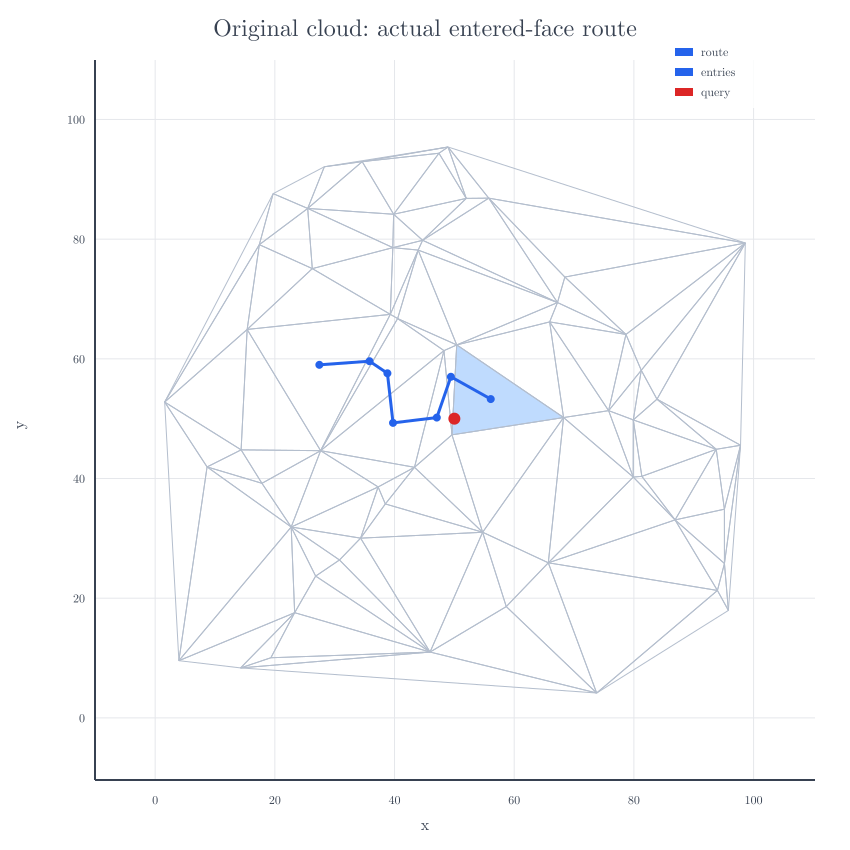
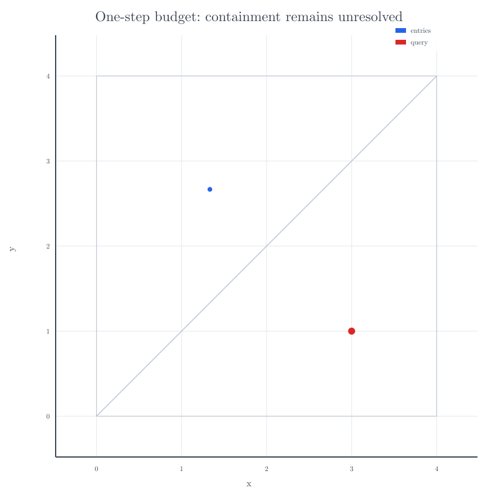
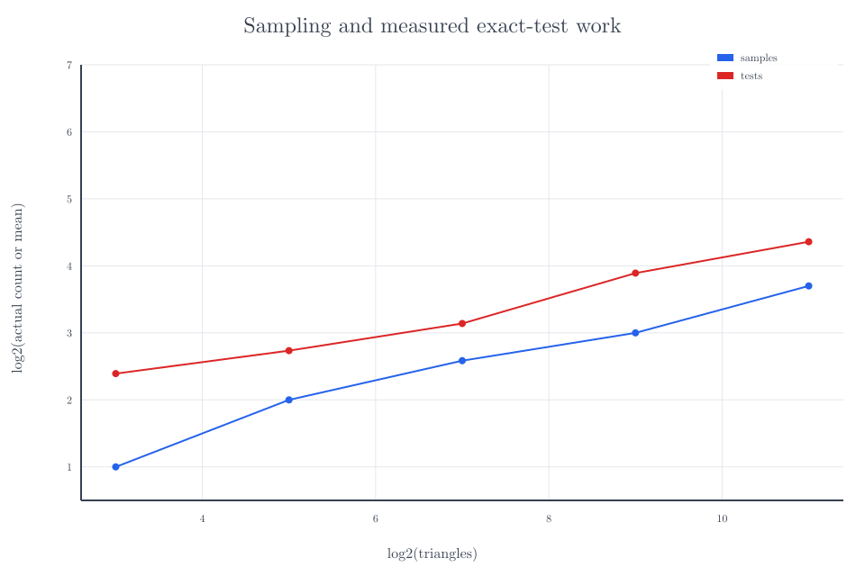

Jump-and-walk: locate a point by actual edge crossings
Abstract
Which triangle contains a query point? Jump-and-walk samples a promising start, then crosses edges whose far side contains the query. We begin with a two-triangle square, retain the original sixty-point random cloud and four queries, and inspect the producing native sample and edge-test histories. Exact orientation signs handle boundary and extreme-coordinate cases. Work measurements separate sampling from walking; exhausted budgets remain distinct from exterior location, and distribution-dependent theory is separated from this implementation's heuristic.
Cross one actual edge first
Split the square with corners (0,0), (4,0), (4,4), (0,4) along its rising diagonal. Face 0 is (0,1,2); face 1 is (0,2,3). For query (3,1), seed 1 samples face 1 twice. The query is right of its directed diagonal 0 to 2, so the walk crosses to face 0. Three nonnegative tests then certify containment. The native diagram reads that negative test and its actual neighbor; its arrows show decision flow rather than a geometric segment route.
#include <dm/dm.hpp>
int main() {
std::filesystem::create_directories("build");
const std::vector<dm::geometry::Point2D> p = {{0, 0}, {4, 0}, {4, 4}, {0, 4}};
const std::vector<dm::geometry::Triangle> f = {{0, 1, 2}, {0, 2, 3}};
const auto t = dm::geometry::TriangulationLocator(p, f).trace({3, 1}, 1);
std::print("| sample | face | normalized score | best face |\n| ---: | ---: | ---: | ---: |\n");
for (std::size_t i = 0; i < t.samples.size(); ++i) {
const auto &s = t.samples[i];
std::print("| {} | {} | {:.12f} | {} |\n", i, s.triangle, s.score,
s.best_triangle);
}
std::print("\n| step | face | first edge |\n| ---: | ---: | ---: |\n");
for (std::size_t i = 0; i < t.steps.size(); ++i)
std::print("| {} | {} | {} |\n", i, t.steps[i].triangle,
t.steps[i].first_edge);
std::print("\n| step | face | edge | u | v | exact sign | neighbor |\n| ---: | ---: | ---: | ---: | " "---: | ---: | ---: |\n");
for (const auto &e : t.tests)
std::print("| {} | {} | {} | {} | {} | {} | {} |\n", e.step, e.triangle,
e.edge, e.u, e.v, e.sign, e.neighbor);
std::print("\nThe actual result is face {}, after {} crossings and {} exact edge tests. Neighbor -2 " "means no lookup was needed.\n",
t.analysis.triangle, t.analysis.work.crossings,
t.analysis.work.edge_tests);
dm::geometry::jump_walk_diagram(t).save_svg("build/jump_walk_crossing.svg");
}| sample | face | normalized score | best face |
|---|---|---|---|
| 0 | 1 | 0.347222222222 | 1 |
| 1 | 1 | 0.347222222222 | 1 |
| step | face | first edge |
|---|---|---|
| 0 | 1 | 0 |
| 1 | 0 | 2 |
| step | face | edge | u | v | exact sign | neighbor |
|---|---|---|---|---|---|---|
| 0 | 1 | 0 | 0 | 2 | -1 | 0 |
| 1 | 0 | 2 | 2 | 0 | 1 | -2 |
| 1 | 0 | 0 | 0 | 1 | 1 | -2 |
| 1 | 0 | 1 | 1 | 2 | 1 | -2 |
The actual result is face 0, after 1 crossings and 4 exact edge tests. Neighbor -2 means no lookup was needed.
Derive containment and the crossing rule
For a counterclockwise triangle, an interior or boundary query lies on the left of every directed edge. Its sign test is
If all three signs are nonnegative, q is in the closed triangle. If a sign is negative, the containing triangle, if it exists in a conforming convex-domain mesh, lies on the other side of that supporting line. The native kernel crosses the adjacent face of that edge. A missing neighbor is a boundary exit. No test uses a tolerance: the canonical predicate computes the exact sign of the represented finite binary64 coordinates, including subnormals. This is not an uncertainty model for unrounded measurements.
The centroid score chooses only a start. The kernel samples ceil(cuberoot(T)) original faces with replacement, with T the triangle count. It keeps the first strict minimum score. Coordinates share a common max(1,absolute mesh/query coordinate) scale before centroid and squared-distance arithmetic, avoiding overflow; long-double rounding or underflow can still tie scores. These heuristic scores never decide containment. The legacy xorshift64 stream, zero-seed fallback and modulo mapping remain; each entered face uses a random cyclic edge start, not a uniform permutation of six orders.
Crossing a separating edge does not imply that triangle centroids move monotonically closer to q. A fixed pseudorandom stream also does not establish an almost-sure termination theorem. The implementation therefore has an explicit walk bound and reports its exhaustion separately.
Retain the original sixty-point cloud
The fixture keeps the original mt19937 seed 7, uniform[0,100) distribution, sixty points and draw order. Standard-library distribution mapping can affect exact coordinates. The current canonical Delaunay triangulator supplies strict counterclockwise faces and stable face ordering; the old cached face numbers are not used as evidence. The four original queries remain (50,50), (20,80), (75,30) and (−10,−10). The plot joins centroids of the actually entered faces: these connectors visualize visit order, not a straight-line tracing algorithm. The measured centroid distances also supply a concrete counterexample to monotone centroid descent in this original run.
#include <dm/dm.hpp>
int main() {
std::filesystem::create_directories("build");
const auto p = dm::geometry::jump_walk_demo_points();
const auto f = dm::geometry::delaunay_triangulation(p);
const dm::geometry::TriangulationLocator loc(p, f);
std::print("The original cloud contains {} points and {} triangles.\n\n",
p.size(), f.size());
std::print("| query x | query y | start face | result face | samples | entered faces | exact tests | " "crossings |\n| ---: | ---: | ---: | ---: | ---: | ---: | ---: | ---: |\n");
for (const auto q : std::vector<dm::geometry::Point2D>{{50, 50}, {20, 80},
{75, 30}, {-10, -10}}) {
const auto a = loc.analyze(q, 1);
std::print("| {} | {} | {} | {} | {} | {} | {} | {} |\n", q.x, q.y,
a.start_triangle, a.triangle, a.work.samples, a.work.steps,
a.work.edge_tests, a.work.crossings);
}
const auto t = loc.trace({50, 50}, 1);
std::print("\n| actual step | face | cyclic start edge | centroid distance to query |\n| ---: | ---: | " "---: | ---: |\n");
double previous = std::numeric_limits<double>::infinity();
std::size_t increases = 0;
for (std::size_t i = 0; i < t.steps.size(); ++i) {
const auto &face = f[t.steps[i].triangle];
const double cx = p[face.a].x / 3 + p[face.b].x / 3 + p[face.c].x / 3;
const double cy = p[face.a].y / 3 + p[face.b].y / 3 + p[face.c].y / 3;
const double distance = std::hypot(cx - 50, cy - 50);
increases += distance > previous;
previous = distance;
std::print("| {} | {} | {} | {:.6f} |\n", i, t.steps[i].triangle,
t.steps[i].first_edge, distance);
}
std::print("\nThe actual centroid distance increases on {} transition; edge crossing is not " "centroid-distance descent.\n",
increases);
dm::geometry::jump_walk_plot(t).title("Original cloud: actual entered-face route").save_svg("build/jump_walk_original.svg");
}The original cloud contains 60 points and 108 triangles.
| query x | query y | start face | result face | samples | entered faces | exact tests | crossings |
|---|---|---|---|---|---|---|---|
| 50 | 50 | 33 | 87 | 5 | 7 | 15 | 6 |
| 20 | 80 | 33 | 47 | 5 | 5 | 12 | 4 |
| 75 | 30 | 105 | 25 | 5 | 5 | 11 | 4 |
| -10 | -10 | 17 | -1 | 5 | 2 | 4 | 1 |
| actual step | face | cyclic start edge | centroid distance to query |
|---|---|---|---|
| 0 | 33 | 1 | 24.288525 |
| 1 | 30 | 0 | 17.124297 |
| 2 | 65 | 0 | 13.515552 |
| 3 | 62 | 0 | 10.274158 |
| 4 | 63 | 2 | 2.939220 |
| 5 | 66 | 1 | 7.024464 |
| 6 | 87 | 1 | 6.906415 |
The actual centroid distance increases on 1 transition; edge crossing is not centroid-distance descent.

Separate boundary, empty and exhausted results
Boundary queries may belong to several faces; returning any containing incident face is valid. An exterior query stops at a negative-sign boundary edge. Empty meshes have their own outcome. An exhausted budget proves neither containment nor exterior location. In the control below, one allowed step crosses the diagonal, then stops before testing the next face even though q lies inside the square. Analyze/trace return step_limit with face −1; the legacy locate() interface throws if its default bound is exhausted, instead of silently returning an exterior answer.
#include <dm/dm.hpp>
int main() {
std::filesystem::create_directories("build");
const std::vector<dm::geometry::Point2D> p = {{0, 0}, {4, 0}, {4, 4}, {0, 4}};
const std::vector<dm::geometry::Triangle> f = {{0, 1, 2}, {0, 2, 3}};
const dm::geometry::TriangulationLocator loc(p, f);
const char *names[] = {"located", "boundary", "empty", "step_limit"};
std::print("| control | stop | face | samples | steps | tests | crossings |\n| --- | --- | ---: | ---: " "| ---: | ---: | ---: |\n");
const auto show =
[&](const char *name, const dm::geometry::LocateAnalysis & a) {
std::print("| {} | {} | {} | {} | {} | {} | {} |\n", name,
names[int(a.stop)], a.triangle, a.work.samples, a.work.steps,
a.work.edge_tests, a.work.crossings);
};
show("inside", loc.analyze({3, 1}, 1));
show("shared edge", loc.analyze({2, 2}, 1));
show("vertex", loc.analyze({0, 0}, 1));
show("outside", loc.analyze({5, 2}, 1));
const auto limited = loc.trace({3, 1}, 1, {1, 100});
show("one step", limited.analysis);
const std::vector<dm::geometry::Point2D> empty_p;
const std::vector<dm::geometry::Triangle> empty_f;
show("empty",
dm::geometry::TriangulationLocator(empty_p, empty_f).analyze({0, 0}));
const double d = std::numeric_limits<double>::denorm_min();
const std::vector<dm::geometry::Point2D> tiny = {{0, 0}, {d, 0}, {0, d}};
const std::vector<dm::geometry::Triangle> one = {{0, 1, 2}};
show("subnormal outside",
dm::geometry::TriangulationLocator(tiny, one).analyze({d, d}, 1));
bool capped = false, bad = false;
const auto t = loc.trace({3, 1}, 1);
const auto records = t.samples.size() + t.steps.size() + t.tests.size();
try {
(void) loc.trace({3, 1}, 1, {0, records - 1});
} catch (const std::length_error &) {
capped = true;
}
try {
(void) dm::geometry::TriangulationLocator(p, {{0, 2, 1}});
} catch (const std::invalid_argument &) {
bad = true;
}
if (!capped || !bad ||
limited.analysis.stop != dm::geometry::LocateStop::StepLimit)
throw std::runtime_error("control guards");
std::print("\nOne-short actual-record admission rejects; clockwise faces reject; a one-step limit " "remains distinct from boundary.\n");
dm::geometry::jump_walk_plot(limited).title("One-step budget: containment remains unresolved").save_svg("build/jump_walk_controls.svg");
}| control | stop | face | samples | steps | tests | crossings |
|---|---|---|---|---|---|---|
| inside | located | 0 | 2 | 2 | 4 | 1 |
| shared edge | located | 1 | 2 | 1 | 3 | 0 |
| vertex | located | 1 | 2 | 1 | 3 | 0 |
| outside | boundary | -1 | 2 | 2 | 4 | 1 |
| one step | step_limit | -1 | 2 | 1 | 1 | 1 |
| empty | empty | -1 | 0 | 0 | 0 | 0 |
| subnormal outside | boundary | -1 | 1 | 1 | 3 | 0 |
One-short actual-record admission rejects; clockwise faces reject; a one-step limit remains distinct from boundary.

The constructor rejects nonfinite points, invalid indices, degenerate or clockwise faces, more than two incident faces per edge and equal shared-edge directions. These local checks do not prove global nonoverlap, convex coverage, absence of holes or the Delaunay property. Those remain mesh preconditions; boundary exit in an arbitrary holed mesh need not prove that q is outside every supplied face. Packed legacy adjacency keys also require used point indices to fit uint32 and triangle ids to fit int.
Measure samples and actual walking separately
The controlled square grids below have integer sites and two triangles per cell, with fixed cocircular diagonals. They require no triangulation solve. For each mesh we run the same relative query (0.37 side,0.61 side) with seeds 1 through 32, and aggregate every complete producing run. The counts include only query operations, not mesh construction or brute-force validation. The plot uses explicit base-two logarithms. This finite experiment is not an empirical proof of an asymptotic distributional bound.
#include <dm/dm.hpp>
int main() {
std::filesystem::create_directories("build");
std::vector<double> x, samples, tests;
std::print("| cells per side | triangles | samples per query | mean steps | mean exact tests | min " "tests | max tests |\n| ---: | ---: | ---: | ---: | ---: | ---: | ---: |\n");
for (std::size_t side = 2; side <= 32; side *= 2) {
const auto m = dm::geometry::jump_walk_grid(side);
const dm::geometry::TriangulationLocator loc(m.points, m.triangles);
std::size_t total_steps =
0, total_tests =
0, min_tests =
std::numeric_limits<std::size_t>::max(), max_tests =
0, sample_count = 0;
for (std::uint64_t seed = 1; seed <= 32; ++seed) {
const auto a = loc.analyze({.37 * side, .61 * side}, seed);
if (a.stop != dm::geometry::LocateStop::Located)
throw std::runtime_error("profile not located");
sample_count = a.work.samples;
total_steps += a.work.steps;
total_tests += a.work.edge_tests;
min_tests = std::min(min_tests, a.work.edge_tests);
max_tests = std::max(max_tests, a.work.edge_tests);
}
const double mean_steps =
total_steps / 32., mean_tests = total_tests / 32.;
std::print("| {} | {} | {} | {:.3f} | {:.3f} | {} | {} |\n", side,
m.triangles.size(), sample_count, mean_steps, mean_tests,
min_tests, max_tests);
x.push_back(std::log2(m.triangles.size()));
samples.push_back(std::log2(sample_count));
tests.push_back(std::log2(mean_tests));
}
auto p = dm::graphics::RPlot::create();
p.line(x, samples, "samples", {37, 99, 235}, 2).points(x, samples, "",
{37, 99, 235}, 4).line(x, tests, "tests", {220, 38, 38}, 2).points(x, tests, "", {220, 38, 38}, 4).title("Sampling and measured exact-test work").x_label("log2(triangles)").y_label("log2(actual count or mean)").y_limits(.5, 7).save_svg("build/jump_walk_work.svg");
}| cells per side | triangles | samples per query | mean steps | mean exact tests | min tests | max tests |
|---|---|---|---|---|---|---|
| 2 | 8 | 2 | 2.188 | 5.250 | 3 | 9 |
| 4 | 32 | 4 | 3.062 | 6.656 | 3 | 14 |
| 8 | 128 | 6 | 4.031 | 8.812 | 3 | 15 |
| 16 | 512 | 8 | 7.469 | 14.844 | 5 | 30 |
| 32 | 2048 | 13 | 10.062 | 20.531 | 6 | 46 |

Building cached adjacency takes expected O(P+T) hash work and O(T) storage for P points and T faces. An untraced query uses O(S+W) expected hash work and constant auxiliary storage for S samples and W started walk steps, with at most three exact edge tests per step. The default finite bound is 4T+16 steps; its worst-case allowance is linear in T. One-shot locate_triangle() repeats construction, whereas a borrowed TriangulationLocator amortizes it across queries. Owned tracing adds O(P+T+K) copy work and storage for K sample/start/test records.
The often-quoted expected cube-root result concerns random-point Delaunay models and a particular sampled-start/straight-march analysis. This code instead samples triangle centroids with replacement and uses a cyclic visibility walk. Its implementation and the measured grids therefore do not inherit that theorem automatically. The primary papers below explain the different assumptions and walk strategies.
Lifetimes, limits and evidence
A locator borrows both input vectors: they must outlive it and remain unchanged, including through its public pointer/map fields. Const queries have independent local RNG/work state. A returned trace owns the complete original mesh and actual scalar histories, so it survives destruction of the locator and inputs. Samples precede steps; each edge-test record names its actual step and directed endpoints. There are no repeated-prefix runs or reconstructed search decisions.
Default construction admits one million complete P+T records after finite/index/orientation checks and before adjacency allocation. Zero disables that optional ceiling. Trace defaults admit one million actual sample/start/test records online, before each operation; zero disables the optional trace ceiling, and untraced analysis ignores it. Failure throws without exposing a partial trace. A positive max_steps overrides the default; zero selects the default rather than an unbounded walk. Record ceilings exclude vector capacity, byte counts, allocator overhead and peak RAM. Plotting has a separate complete-display ceiling and finite padded-span restriction; the exact locator accepts extreme finite coordinates that cannot be plotted with representable padded spans.
Fifteen targeted sanitizer and native tests cover grid boundaries, original/random queries, exact subnormal/extreme triangles, invalid topology, packed-index guards, caps, ownership and formatting. An independent rational oracle checks 2,682 complete queries, 11,616 samples, 10,212 entered faces and 21,505 exact edge tests, including RNG chronology, adjacency, complete containment scans and the explicit budget stop. A frozen old-kernel comparison preserves triangle answers and all 51,937 tested-edge operand triples on 5,004 ordinary original-mesh queries. The subnormal exterior control corrects a rounded-product false containment. No external dataset is needed for this geometric experiment. The analysis shows what the actual sampled visibility walk did, while keeping correctness certificates, resource limits and distributional performance claims separate.
References
Ernst P. Mücke, Isaac Saias and Binhai Zhu (1999), “Fast randomized point location without preprocessing in two- and three-dimensional Delaunay triangulations”, Computational Geometry 12(1–2), 63–83, doi:10.1016/S0925-7721(98)00035-2, author paper, especially pages 64–65. Their analyzed jump-and-march samples vertices without replacement and traverses a segment; this report's centroid visibility variant is specified above.
Olivier Devillers, Sylvain Pion and Monique Teillaud, Walking in a triangulation, INRIA research report 4120 (2001), distinguishes straight, visibility and stochastic strategies. Randomized termination statements require their assumptions; a bounded deterministic pseudorandom implementation still exposes an explicit exhaustion outcome.